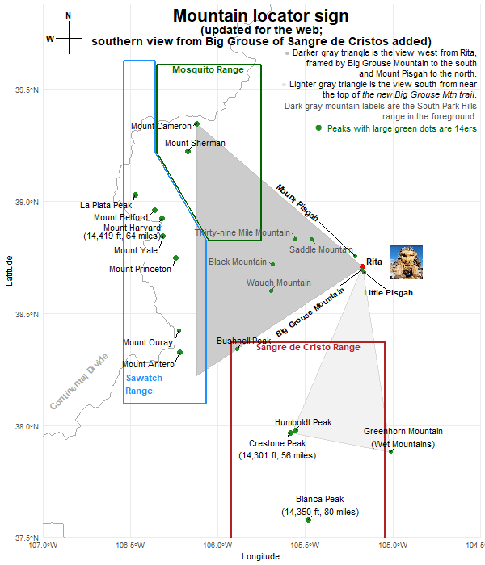

Views from the Grouse Mountain Trails
Panoramas from the view are below the sign

Panoramas
View south from near the top of the new Big Grouse Mountain Trail:
Sangre de Cristo Mountains
8 14ers visible from here per
Peak Finder's view
from the trail near the top bench
View west from Rita:
Continental Divide
8 14ers visible from here per
Peak Finder's view
from Rita

 - †.png)